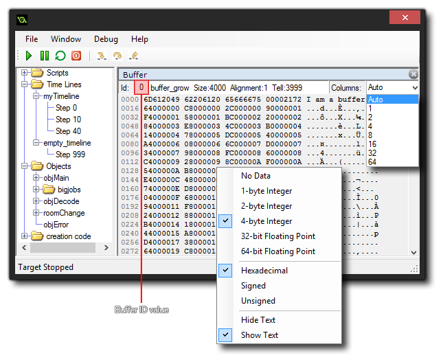
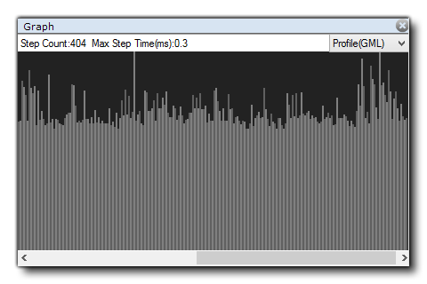
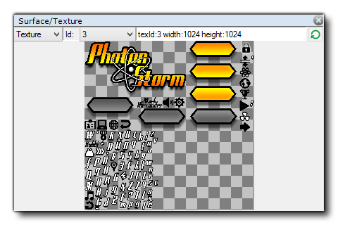

调试模块 是一个强有力的用来检查你的游戏的工具，并且在追踪你的代码中的错误与bug上尤其有用、同时检查脚本是否如预期那般运行、以及变量和数组包含你期望的数值等等……你可以在GameMaker: Studio中，点击位于IDE的顶部的红色"Play" 按钮来启动你的游戏以进入调试模块，或者通过点击 Run菜单中的“Run in Debug Mode”来启动。
注意：你也许会得到Windows防火墙（或者任何你正在运行的防火墙程序）的提示来让这个模块作为一个安全的例外程序来运行。你必须这么做否则它不会正常工作。这是由于调试模块独特的工作方式，并且这也对调试移动平台至关重要。
注意： 在仪器上时调试模块会自动连接WiFi，如果你有任何配置问题，你还是需要在首选项中打开“手动输入IP”。这样一来就需要你手动定义IP来连接，然后IP会被存起来以便日后使用。
调试模块窗口看起来像这样：
在顶端有四个下拉菜单：
- File:当你的游戏和调试模块连接断掉的时候，你可以在此尝试重连接，或者也可以在此选择退出调试模块。（不过这样不会退出游戏，仅仅是调试模块而已）
- Window:在这个菜单中包含你能在调试的时候生成的多种子窗口的选项。你可以把它们全删掉（把它们全部清理掉你就能获得一个全新的窗口布局），或者把当前的布局存起来再或者读取以前存储的布局。
- Debug:在这里你可以暂停或者启动你正在调试的游戏，或者你也可以把断点切换成打开或者关闭的状态。
- Help:打开你的浏览器，给你看YoYoGames官网的服务台。
除了这些下拉菜单，窗口上你还有一排按钮来控制你游戏中的方方面面，让游戏与调试模块产生互动。这些按钮是：
Play:这个按钮让你暂停掉的游戏启动起来（快捷键F5）。
Pause:暂停游戏。（快捷键：F6）。
Restart: 重启游戏。
Step In:跳入一个代码块或脚本（热键： F11）。
Step Over: 跳过一个代码块或脚本（热键：F10）。
Step Out: 跳出一个代码块或脚本（热键：<SHIFT> + F11）。
RealTime Updates: 打开或者关闭（默认关闭）实时更新调试信息。
前三个按钮用来控制你的游戏，允许你在任意时刻开始停止或者暂停。当游戏暂停的时候，你可以之后使用下面三个按钮来“逐步”运行你的代码。这意味着你可以告诉你的游戏运行代码中的当前行，之后跳转到下一行。只要你想，就允许你跨越整个游戏来运行一行代码。通常你只需要用跳入按钮来做这件事，不过你还有另外两个选择，一个跳过代码和一个跳出代码。跳过代码在你有大片脚本需要运行的时候非常有用，点击它的话会把你的整片脚本或者代码块作为简单的一步来运行，停在随后的下一行；而跳出代码则会把你带出这段脚本（这些脚本一次性全部运行）然后停在下一步。
最后的这个图标允许调试窗口实时更新数据，这样的话你就能看见变量如何改变或者实例如何生成与破坏的了。不过要注意这样也许会影响游戏表现，而且并不是所有的信息都会实时有效。例如，这个渲染状态监视窗口就无法实时观看。
调试模块的主要思想就是允许你监视你的游戏中的每个细节。这个目的要使用调式模块右手边打开的监视窗口来实现。为了打开一个新的监视窗口，只要点击空白区域（这玩意会显示一行字："select window type"）就行，或者右击子窗口顶端的横条然后选择一个新的“类型”。
注意：许多监视窗口（例如全局，局部，或监视）并不会在游戏运行时更新，它们需要你暂停游戏或者在它们更新前设置断点。
你也可以使用窗口顶端的横条中的“Split”功能把主窗口区域划分成多个窗口，这个操作允许你组织布局来满足你的需求（而这些布局也可以通过顶端下拉菜单“Window”来存储）。你选择的窗口的类型取决于你想要监视什么，有下列可选项：
Source（源代码）
source窗口是你可以查看你的游戏中的源代码的地方，而你可以在其中拥有多个可选子窗口，每个子窗口都显示着来自不同实例或事件的代码。你可以右击 一行代码的旁边来添加断点（后文有更多关于断点的细节），再右击一次来取消（也可以用<f9>，或者“Debug”下拉菜单中的toggle option选项）。在该窗口打开的状态下，你也可以双击资源树中的任一实例中的事件来在新的子窗口中显示其中的代码。
Globals（全局）
Globals窗口会显示一个包含所有当前声明过的全局变量与他们的值的列表。如果你在一个值上右击，那你就可以通过设定它的类型的方式（查看下方的数据类型）来观察他的数据结构的细节。
Locals（局部）
Locals窗口显示当前步下的性能与参数，包括了当前运行的事件（或者脚本）的名称、事件中的位置（PC就是“程序计数器”）、运行代码块的“self”实例和事件中的“other”实例。这最后部分仅在当事件是碰撞事件或者代码中有with时才会有效。如果实例正在碰撞，“other”会显示碰撞中的其他实例（以变量的形式），但如果是with的话，“self”实例就会变成运行代码的那个，而“other”就是之后实际包含with的那个实例。除此之外的其他时间，“other”仅会显示与“self”相同的数据。在所有信息之后，你会发现一个包括了所有局部变量的列表，这些都是在按步跳过的代码块中当前声明的局部变量如果你在一个变量上右击，你能设定它的类型（见下文的数据类型）来观察它的数据结构细节。
Watches（监视子画面）
这个窗口可以让你添加你想一直追踪的特定的变量。追踪的内容可以是一个全局或实例范围的变量，一个内置的变量，甚至数组或数据结构。如果按步跳过的实例代码中包含被监视的变量，那么它就会在这里显示出来。这意味着你可以轻易追踪变量而不用在Locals（局部）或者Globals（全局）窗口中查找它。右击变量值可以设定它的类型（见下文的数据类型）、删除它或者清理所有窗口中的监视值。你也仅通过在变量上双击来改变其中某些变量，赋予其新的值。需要注意你不能以这种方式重分配数组或者数据结构，但你可以改变他们中的某些内容（不能改变地图数据结构中的“关键”值，也不能改变优先队列里的优先值） 。
Instance（实例）
顾名思义，这个窗口会显示所有实例变量，局部变量和与当前源代码窗口中按步跳过的实例的内置变量。（如果一个实例是用关键词“other”或者with语句引用来的，那么这个窗口中会显示该实例的属性）。
Output（输出）
这个窗口仅仅会显示编译器的输出（正如主IDE编译器窗口中显示的一样）。如果你右击窗口，你可以选择清空它，或者在剪贴板中复制它的内容。
All Instances（所有实例）
如果你需要监视所有的当前房间中的实例，你可以选择这个窗口，它们就会被列出来。你也可以观察任何内置的变量或者它们拥有的实例的变量的状态，然后你可以右击在值上面来设定它的类型（见下文的数据类型）。
Selected Instance（被选的实例）
这个窗口是为了你在游戏中选择的实例而存在的。暂停游戏，只需要点击游戏窗口中任何可见的实例，你就能实现该功能。在鼠标指针下的实例的信息会显示在Selected Instance窗口中。在此处你能看到它的内置信息和实例变量，与实例窗口是一样的。
Call Stack（调用栈）
这个窗口会显示当前事件的调用栈，还有按步跳过代码的行号。
Buffer（缓冲器）
如果你在游戏中初始化了缓冲器，这个窗口会给你显示缓冲数据。你可以选择任一使用缓冲ID的值产生的缓冲器，其中缓冲ID对第一个缓冲器是从0开始的，接下来的缓冲器每一个的ID加1。如果你右击数据窗口，你就能查看数据是如何表现的，设定队列和类型，你也能设定数据是如何在列盒子中陈列的。在下拉菜单中你可以选择一个布局的默认列表，或者你可以点击输入框输入你需要的值。要主要注意对于大的缓冲器来说，需要你滚动页面才能看全数据，之后松开鼠标按键来选取然后显示调试模块中你所需要的数据。
Profile（概况）
该窗口是你查看当前被测试游戏所处系统概况的地方，在此处你能查看你游戏中从整个事件到单独的函数调用中的各种细节，以此了解程序如何表现它们的功能，而麻烦区域或者瓶颈又在哪里。而概况中更进一步的信息请阅读下方单元：
Graph（图表）
图表窗口将你的游戏表现以图表形式展现。你可以查看内存使用，或者GML在CPU中是如何表现的，或者二者结合。你能通过在右侧点击下拉选项卡来改变视觉效果，选择你需要的选项。 
Render States（渲染状态）
这个窗口为你显示所有被渲染当前帧的可用信息，例如绘制的透明度或者填充颜色。这些信息不会实时更新，所以你需要暂停游戏来获得帧细节的更新。
Surfaces（表面）/Textures（材质）
在此视图中允许你查看到底哪些东西正画在你的表面上（包括应用表面）以及查看内存中的材质页。你可以在视图顶端选择材质还是表面，然后选择材质或表面的ID让它显示在窗口中。 
一件重要的事需要注意，当游戏运行时变量值和其他细节默认是不会更新调试窗口的，因此你必须在局部、全局和其他数据被有效化之前在调试模块里首先使用“暂停”按钮来暂停游戏，或者点击顶端的图标启用实时更新。此项规则唯一的例外是Profile（概况）视窗，它的启用与否是独立于实时更新开关以外的，它有自己的on/off开关。
当你观察任何窗口中的变量时，它都可能是数种数据类型中的任意一个。然而，由于GameMaker: Studio存储特定事物的方法，调试模块并不总是知道变量中存了些什么。这是因为数据结构或者实例的内部ID值是整数型的，所以调试模块不总是知道变量中存储的整数型值是数据结构还是实例还是仅仅一个简单的整数。基于该理由，你在任一变量值上右击就会弹出一个显示它所有可能的数据类型的列表。字符串和数组不允许该操作，即使数据结构存储在实例变量中也不值得如此，它的ID是全局的，所以例如如果你有四个实例，每个都生成一个ds_list（列表数据结构），它们的列表ID会是0到3，而不会都为0。
选择好了你的数据类型以后，点击它名字旁边的小"+"来让变量显示整个的结构。这样就会展开整个结构内容，并且，在观察的视窗中，也允许你修改它们的值。
断点是你游戏代码中你需要暂停的地方，这样你就能观察到底发生了什么。在调试模块中，你能在任何时间任何代码块中设定断点，你也能在GameMaker: Studio IDE中来设置。当制作游戏的时候，你可以用F9来添加断点（或者使用鼠标右击然后选择“添加断点”），不管是在物体（object）窗口中的动作（action）上还是在编辑窗口中的代码行中。现在，当你在调试模块中运行游戏的时候，它就会暂停在你定下的断点（们）上了。在IDE中设置的断点会一直随着你的游戏而存在，即使多次运行也会留存。然而如果是你在调试模块中添加的断点的话，一旦关闭调试模块或者重开测试运行，断点就会消失了。
| Converted from CHM to HTML with chm2web Pro 2.85 (unicode) |